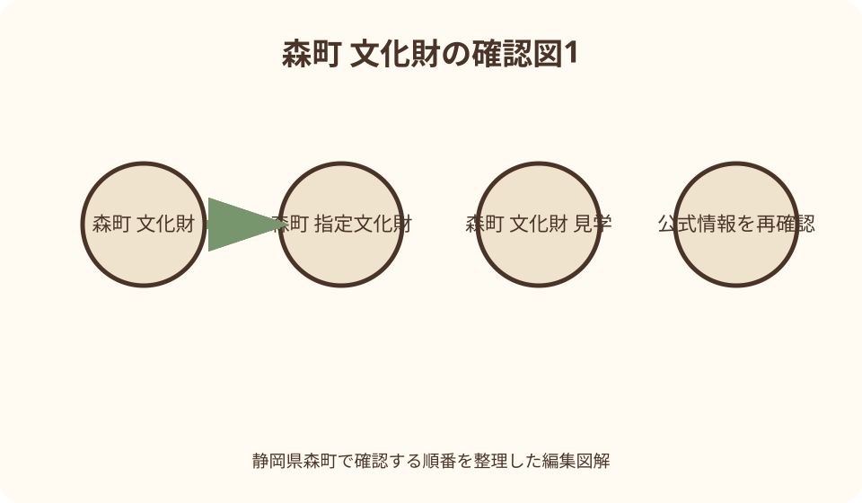
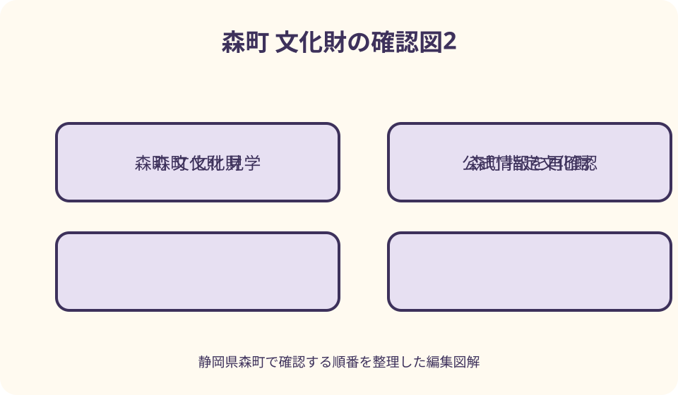

歴史・文化財｜最終確認 2026-08-10
静岡県森町の文化財を調べて訪ねる｜指定区分・公開可否・保存配慮の手引き
森町の文化財を訪ねる前に、森町公式の文化財一覧で指定名称、区分、種類、所在地、所有者または管理者を確認し、現在の公開・祭礼日程・撮影可否を管理者の公式案内で再確認します。指定文化財であることは常時公開や敷地への自由な立入りを意味しません。建築は公開範囲から、民俗芸能は公式の奉納日程で、史跡と天然記念物は道と保護柵を守って見学し、非公開なら町史・文化財解説・観光資料へ切り替えてください。

編集イラスト最初に作る——名称、指定区分、種類、管理者の四列表
静岡県森町の文化財を調べるときは、行きたい場所の写真から始めず、正式名称、国・県・町などの指定区分、建造物・民俗・天然記念物などの種類、所有者または管理者を四列に整理します。似た名称の対象を取り違えないためです。
森町公式の文化財ページには、友田家住宅、遠江森町の舞楽、次郎柿原木、天宮神社の建造物やナギなど、性質の異なる対象が掲載されています。一覧に同じように並んでいても、現地で見られる条件は同じではありません。
所在地欄は訪問先の手掛かりですが、見学入口や駐車場所を示すとは限りません。個人所有の住宅、社寺の所蔵品、祭礼で披露される芸能は、住所へ行くだけでは見学できません。管理者の連絡先と公開案内を次の列へ加えます。
調査日も必ず記録します。町の図説町史は歴史を知る資料ですが、ページには発行時点の情報が現在と異なる可能性があるという注記があります。歴史の記述と、現在の公開・交通・連絡先を別資料で確認します。
国・県・町指定を読む——順位ではなく、指定主体を確認する
国指定、県指定、町指定は、単純な人気順位や見学価値の順番ではありません。どの制度と指定主体で保護される対象かを示す区分として読みます。訪問者は区分の大きさより、対象の種類と管理者の案内から見学方法を決めます。
森町公式一覧では、国指定の建造物として友田家住宅、国指定の民俗として小國神社・天宮神社・山名神社に関わる遠江森町の舞楽などが掲載されています。建物と舞楽は、同じ国指定でも見る日時と場所がまったく異なります。
県指定には、次郎柿原木、天宮神社のナギ、天宮神社本殿・拝殿、寺社所蔵の工芸品や絵画書跡などが載ります。樹木、建物、収蔵物を「県指定だから境内で常に見える」と一括りにしません。
町指定については、森町公式の一覧や文化振興係の最新案内で指定名称と現状を確かめます。古い町史に価値が述べられていても、現在の指定区分を推測しません。指定変更、名称表記、所有者情報は公開された最新資料を優先します。
指定・選択・登録を分ける——似た制度用語を省略しない
文化財を紹介するときは、「指定」「選択」「登録」という語を同じ意味に縮めません。たとえば民俗芸能には指定や記録作成等の措置を講ずべき対象などの表現があり、鉄道建築には登録有形文化財という制度があります。公式名称をそのまま控えます。
小國神社公式は古式十二段舞楽を国指定重要無形民俗文化財として案内し、田遊びについても別の文化財区分を記しています。行事名が同じ境内の案内に並んでも、指定名称、区分、奉納日は別なので、記事では一行ずつ根拠を付けます。
遠州森駅本屋と上りプラットホームは天竜浜名湖鉄道が国の登録有形文化財と案内しています。これを町公式一覧の国指定建造物と同じ欄へ入れず、登録文化財として記録します。登録だからホームへ自由に入れるという意味でもありません。
制度用語に自信がなければ、文化財名だけをメモし、森町文化振興係や文化庁のデータベースで正式表記を確認します。「国宝級」「重要な史跡」など公式指定と誤認される独自の格付けを付けません。

指定は常時公開を意味しない——見られる対象と条件を一件ずつ聞く
文化財指定は保存と継承に関わる制度であり、所有者が毎日一般公開する約束ではありません。個人住宅、社寺の本殿、収蔵される絵画や工芸品、年一回の祭礼を、所在地へ行けばすべて見られる対象として予定に入れません。
公開確認では、訪問日、人数、見たい対象、外観のみか内部見学か、予約の要否、撮影希望を管理者へ伝えます。「文化財を見たい」だけでは対象が特定できません。所蔵品は通常非公開でも、企画展や祭礼時だけ公開される場合があります。
寺社の境内が開いていても、本殿内部、舞殿、社務所、収蔵庫の公開範囲は別です。柵、扉、注連縄、立入禁止表示を越えず、参拝者が入れる場所から見ます。人が出入りした扉を見学入口と判断しません。
公式サイトに古い公開案内が残る場合は、掲載日と対象年を確認します。毎年同じ月日や時刻で行われると決めず、当年のお知らせを探します。確認できなければ現地で交渉せず、外観見学または資料閲覧へ切り替えます。
建造物を訪ねる——外観、内部、敷地の三つを分ける
建造物を調べるときは、指定対象が本殿だけか、本殿と拝殿か、住宅全体か、付属物を含むかを正式名称で確認します。森町公式は天宮神社本殿及び拝殿を県指定として掲載しており、境内全部が同じ指定対象とは書きません。
友田家住宅は国指定建造物として掲載されますが、個人所有・管理の文化財を観光施設と同じように扱いません。見学可能日、予約、入口、駐車を管理者または町の担当へ確認し、非公開なら道路からの撮影も可否を尋ねます。
建物の壁、柱、扉、金具へ触れず、軒下へ雨宿りに入りません。三脚、照明、大きな荷物は動線を狭くするため、許可なく使用しません。床へ上がれる場合は靴、荷物、飲食について管理者の指示を守ります。
図説町史の神社建築・寺院建築ページは、社殿形式や町指定建築を理解する予習に使えます。ただし、外観から年代や当初材を鑑定せず、資料にない改修歴を作りません。自分の観察と公的な解説を別に記録します。
祭礼・舞楽を訪ねる——文化財は物ではなく、継承される時間でもある
遠江森町の舞楽は、小國神社、天宮神社、山名神社で継承される民俗芸能として森町公式一覧に掲載されています。一つの展示室で三つを常時見られるものではなく、それぞれの祭礼、保存会、会場を確認して計画します。
小國神社の十二段舞楽は神社公式に由来と奉納の案内があります。観覧日程は当年の祭典情報を見て、席、立入範囲、撮影、三脚、録音の可否を神社へ確認します。過去の案内日時を翌年へそのまま移しません。
祭礼では文化財の記録より、神事の進行、奉仕者、参拝者、地域の生活を優先します。正面を確保するため早朝から場所を占有したり、子どもの舞い手へ近づいたりしません。撮影不可なら目で拝観し、文章は公式解説を参照します。
雨、強風、感染症対策、境内工事などで日程や内容が変わる場合があります。開催の有無だけでなく、開始時刻、終了見込み、交通規制、臨時駐車を公式情報で確認します。中止時は通常参拝を強行せず、舞楽の公式資料を読む日に替えます。

史跡・所蔵品を調べる——現地に残るものと収蔵されるものを分ける
森町公式の図説町史には史跡・名勝・天然記念物の項目があり、墓、塚、城跡など複数の対象が解説されます。史跡名が地図にあっても、現地へ安全な公道があるか、私有地か、案内板があるかを別に確認します。
絵画、書跡、古文書、鰐口などは寺社や所有者が保管する文化財です。指定一覧に所在地が載っていても、境内へ行けば展示されるとは限りません。収蔵環境を守るため、公開機会と閲覧条件を管理者へ尋ねます。
図説町史の工芸品・書跡・古文書ページは、森町に鋳物師の歴史と金工品が伝わる背景を説明しています。資料画像を見たことと実物を見たことを混同せず、非公開品の寸法や状態を画面から推測しません。
史跡で案内板を撮影する場合は、現在地と対象の関係が分かるようにし、案内板の文章を自分の体験談へ書き換えません。読めない文字をなぞったり、苔や土を除いたりせず、管理者が維持する状態のまま見学します。
天然記念物を見る——樹木の根と保護柵を風景の一部として守る
森町公式一覧には、県指定天然記念物として次郎柿原木と天宮神社のナギが掲載されています。樹木は建物と異なり生きた文化財で、根、枝、土壌の状態が保存に関わります。近づける距離を自分で決めません。
保護柵や立入制限がある場合は、その外から観察します。根元へ入り、幹へ触れ、落葉や実を持ち帰り、枝を撮影用に動かすことはしません。落ちた実であっても所有者の許可なく採取しません。
次郎柿原木について町は保存会による樹勢回復と年間管理を紹介しています。見学者は果実の収穫や食味を期待する場所ではなく、品種の歴史と保存活動を学ぶ対象として訪ねます。公開範囲と道を事前に確認します。
台風、強風、積雪、樹木管理作業の時期は、枝落下や立入制限の可能性があります。悪天候後に様子を見に近づかず、管理者の安全確認を待ちます。遠くからしか見られなくても、柵を越えて写真を得ません。
所有者・管理者へ連絡する——質問を五項目に絞る
連絡時は、対象の正式名称、希望日と時刻、人数、見学したい範囲、撮影の有無を伝えます。文化財の由来を電話で長く聞く前に、公開しているか、予約が必要か、安全に到着できるかを確認します。
個人所有者の連絡先が公開されていない場合は、周辺住民へ聞き回らず、森町の文化振興係または観光窓口へ問い合わせます。住所を手掛かりに直接訪問し、呼び鈴を押して見学交渉することは避けます。
寺社へは、参拝と文化財見学を分けて尋ねます。祭礼準備、祈祷、法要、清掃中は対応できない場合があります。返信がないことを許可と解釈せず、一般参拝範囲だけにするか、日を改めます。
学校の調査、商用撮影、団体見学、記事掲載は、個人の記念撮影と条件が異なる可能性があります。媒体、公開範囲、人数、機材を最初に伝え、必要な申請を確認します。許可内容は日付と担当窓口を控えます。
道と移動を調べる——所在地を駐車場や入口へ読み替えない
文化財一覧の所在地は、最寄りの見学入口、駐車場、歩行経路とは限りません。公式観光地図、所有者のアクセス案内、道路状況を重ね、公共交通の駅や停留所から入口までを道路に沿って確認します。
山間部、農地、寺社の裏手にある史跡へ向かう場合は、私道、作業道、獣害柵、落石、増水を考えます。地図上で線がつながっていても通行可能とは限らず、管理者が案内しない近道へ入りません。
車では、駐車場の有無、利用時間、祭礼時の規制を確認します。文化財の前、農道、住宅の出入口、路肩へ停めません。満車なら待機場所を探して周回せず、別日にするか公共駐車の案内を利用します。
徒歩では、距離に横断、坂、休憩、見学時間を加えます。帰りの列車やバスを二本確認し、日没前に戻ります。一日に国・県・町指定を一件ずつ集める計画ではなく、同じ地域の一、二件へ絞ります。
撮影と記録を整える——許可範囲と公開範囲を二段階で確認する
現地で撮影できることと、ウェブサイトやSNSへ公開できることは同じとは限りません。管理者へ、個人記録、記事掲載、商用利用、人物撮影の別を伝えます。撮影可の一言から二次利用まで許可されたと広げません。
フラッシュ、三脚、ドローン、照明、録音は、文化財、祭礼、参拝者、周辺住宅へ影響します。個別許可がない限り使用せず、ドローンは法令だけでなく所有者と管理者、飛行区域の確認が必要です。
写真には、撮影日、正式名称、見た方向、公開範囲を記録します。説明板と対象を一緒に撮る場合も、全文を転載する前提にしません。記事では必要な事実を自分の言葉で要約し、出典へリンクします。
人の顔、車両番号、表札、祭礼参加者の名札が写った写真は公開前に確認します。文化財を写すため周囲のプライバシーを犠牲にせず、適切な構図が取れなければ写真を使いません。
保存へ配慮する——触れない、動かさない、情報を広げすぎない
見学の基本は、文化財へ触れず、周囲の物を動かさず、指定された動線から外れないことです。建物の柱、石造物、樹木、展示ケースへ手を置かず、採寸や接写が必要なら管理者の許可を得ます。
飲食、喫煙、火気、傘、濡れた衣服、大きな鞄は保存環境へ影響します。屋内見学では荷物置場と履物の指示に従い、屋外でも文化財の台座へ荷物を置きません。ごみは持ち帰ります。
盗難や損傷につながる細かな位置、施錠、収蔵状況を、見学記として不用意に公開しません。管理者が一般公開していない情報を現地で知っても、記事へ載せる前に公開可否を確認します。
破損、倒木、落書きを見つけても、自分で直したり触って確かめたりしません。安全な場所へ離れ、管理者や町の担当へ場所と状況を伝えます。SNSで拡散する前に、保存を担当する窓口へ連絡します。
雨天・災害時に変更する——公開施設か資料調査へ切り替える
雨天は、史跡の斜面、樹木の枝、濡れた石段、河川沿いの道に危険が増えます。警報、雷、強風、大雨の後は屋外文化財を外し、交通運行と道路情報を確認します。現地まで行って柵越しに判断しません。
小雨でも、古い建物の軒下へ無断で避難せず、公開施設や営業確認済みの休憩場所を使います。濡れた傘を屋内へ持ち込む方法、鞄を置く場所を管理者へ尋ね、木部や展示ケースへ水滴を付けません。
代案は、森町公式の文化財一覧から対象を一件選び、図説町史の該当章、文化庁データベース、所有者公式を照合する調査です。指定名称、年代、公開情報の出典を一枚にまとめ、晴天日の質問を作ります。
資料館や図書館へ変更する場合も、開館日、閲覧条件、撮影、複写を公式案内で確認します。収蔵品の展示を期待して向かわず、目的の資料が閲覧可能か問い合わせます。雨天に見学したと事実を作りません。
非公開時の代案を持つ——見ないことも保存への参加にする
非公開と分かったら、現地で所有者へ例外対応を求めません。外観も撮影不可なら、町公式の解説、文化庁の登録情報、寺社公式の写真や祭礼案内を読み、公開された範囲だけで文化財の位置付けを学びます。
祭礼が中止または日程外なら、保存会や寺社が公開する由来、演目、過去のお知らせを確認します。動画があっても当日の神事を見た体験にはせず、公式記録を視聴したと明記します。次回日程は発表後に計画します。
個人所有建築が非公開なら、公開されている町並み、遠州森駅の登録有形文化財、町立施設などへ対象を替えます。外から見えるからよいと住宅周辺を歩き回らず、公開を前提に整えられた場所を選びます。
天然記念物の周辺が作業や災害で閉鎖されたら、保存活動の案内を読む日にします。文化財を守るための非公開や立入制限は、訪問者の失敗ではありません。見ない判断を記録し、管理が終わるまで待ちます。
良い点——制度、所有、継承を一つの町で比べて学べる
森町の文化財を調べる良い点は、住宅や社寺建築、舞楽、史跡、樹木、工芸品など、異なる種類を町公式の一覧と図説町史でたどれることです。物だけでなく、祭礼と保存活動も文化の継承に含まれると分かります。
国・県・町指定、登録、民俗芸能の区分を正式名称から調べれば、文化財を有名順に並べる見方から離れられます。管理者ごとに公開条件が違う理由も、対象の保存と現在の利用を考える入口になります。
小國神社のように所有者・管理者が公式サイトで祭礼や参拝を案内する対象は、町一覧と当事者情報を照合できます。指定の事実は町や文化庁、当日の観覧条件は神社というように、情報の役割を分けられます。
調査してから一、二件に絞ることで、移動に追われず、案内板、建築、境内のルールを丁寧に確認できます。見学できない対象も含め、保存の理由と公開の限界を理解することが文化財訪問の成果になります。
注文したい点——正式名称、公開、撮影、道、連絡先を最新化する
注文したい点の第一は、森町公式で正式名称と指定区分を確認し、文化庁や県の情報が必要なら照合することです。通称だけで検索すると別の寺社や同名文化財が混ざるため、所在地と所有者も一緒に記録します。
第二は、所有者・管理者の当年案内で公開日、予約、人数制限、祭礼日程を確かめることです。過去の記事や検索結果の抜粋を現在の開館表として使いません。返信が必要な場合は十分前に問い合わせます。
第三は、撮影と掲載の条件です。個人記録、ウェブ公開、三脚、動画、祭礼の人物撮影を分けて質問します。現地の掲示が事前回答より厳しい場合は掲示に従い、許可の範囲を超える機材を使いません。
第四は、入口までの道、公共交通、駐車、悪天候時の変更です。文化財所在地をナビの駐車地点にせず、管理者が示す経路を使います。非公開や中止の場合は資料調査へ切り替えることも予定表に入れます。
対案・結論——一日に一種類を選び、公開確認後に訪ねる
結論として、初回は建造物、祭礼、史跡、天然記念物のうち一種類を選び、森町公式で指定名称と区分を確認します。次に所有者または管理者の公式情報で公開、撮影、道を確かめ、訪問先を一、二件に絞ります。
建造物なら外観・内部・敷地、祭礼なら奉納日・観覧範囲・人物撮影、史跡なら公道・私有地・案内板、天然記念物なら保護柵・根・天候という固有の確認があります。文化財という一語で共通の見学手順にしません。
公開を確認できない場合は、森町の文化財一覧、図説町史、文化庁データベース、寺社公式を読む調査日に替えます。資料から得た知識を現地体験と書かず、次回の問い合わせ項目として残します。
訪問できても、触れず、動かさず、立入範囲と撮影条件を守ります。指定文化財を見た数より、所有者と保存環境を尊重し、正しい名称と出典を持ち帰れたかを文化財めぐりの基準にします。
大石の視点——公開されない理由まで含めて文化財を理解する
私が森町の文化財を訪ねるなら、一覧から一件だけ選び、指定名称を紙へ書きます。その下へ管理者、公開日、撮影、入口、雨天代案を記し、空欄が残れば現地へ行く前に問い合わせます。数を増やすのは二回目以降です。
文化財は、見たい人のためだけに存在するものではありません。住まいとして使われる建物、祈りの場、地域が奉納する舞、手入れされる樹木には、それぞれ現在の役割があります。見学者の都合を保存と生活より上に置きません。
非公開という回答も重要な情報です。扉の向こうを想像で補ったり、柵越しの写真から内部を断定したりせず、公式資料が伝える範囲を読みます。見られないことを受け入れる態度が、所有者との信頼と次の公開機会を守ります。
帰宅後は、実際に見たもの、管理者から聞いたこと、資料で確認したことを三つに分けます。指定区分と公開条件を正しく伝え、細かな位置や個人情報を広げない。この整理まで終えて、森町の文化財訪問は完成します。
公式情報・確認先
掲載内容は次の一次情報を基礎に整理しました。営業、料金、催し、交通は変わるため、出発前または手続き前にリンク先で最新情報を確認してください。
- 文化財（静岡県森町、2026-08-10確認）
- 図説森町史（静岡県森町、2026-08-10確認）
- 森町の神社建築（静岡県森町、2026-08-10確認）
- 森町の寺院建築（静岡県森町、2026-08-10確認）
- 森町の工芸品・書跡・古文書（静岡県森町、2026-08-10確認）
- 史跡・名勝・天然記念物（静岡県森町、2026-08-10確認）
- 観光パンフレット（静岡県森町、2026-08-10確認）
- 森町観光協会（森町観光協会、2026-08-10確認）
- 十二段舞楽（遠江國一宮 小國神社、2026-08-10確認）
- ご参拝の皆様へ（遠江國一宮 小國神社、2026-08-10確認）
- 小国神社の舞楽（文化庁 文化遺産オンライン、2026-08-10確認）
- 遠州森駅（天竜浜名湖鉄道、2026-08-10確認）